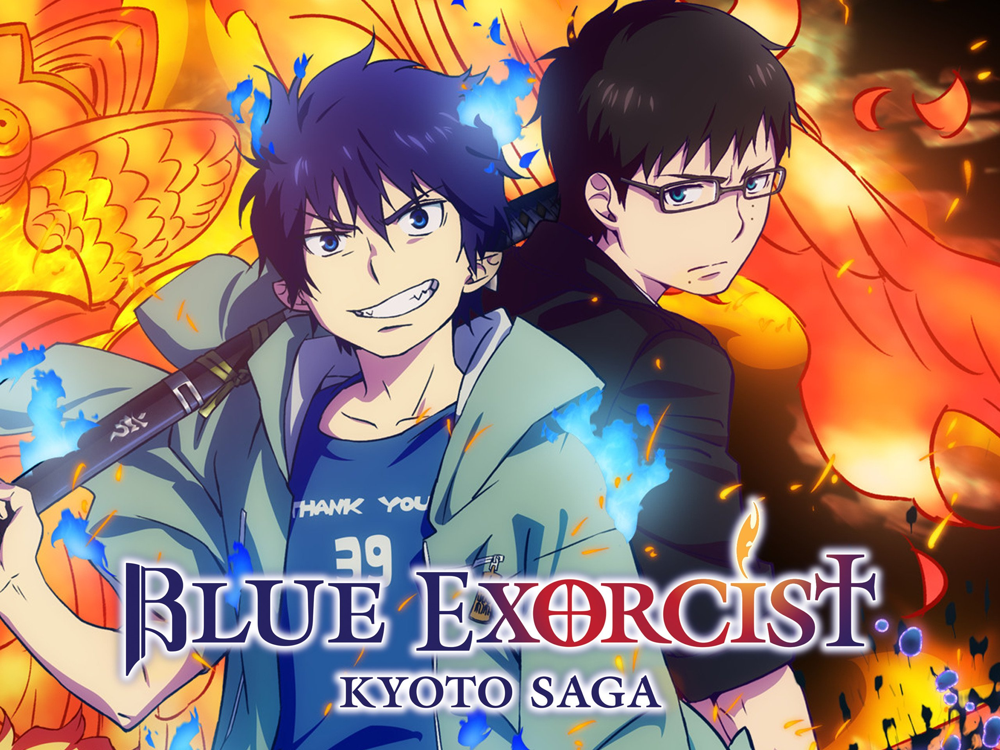
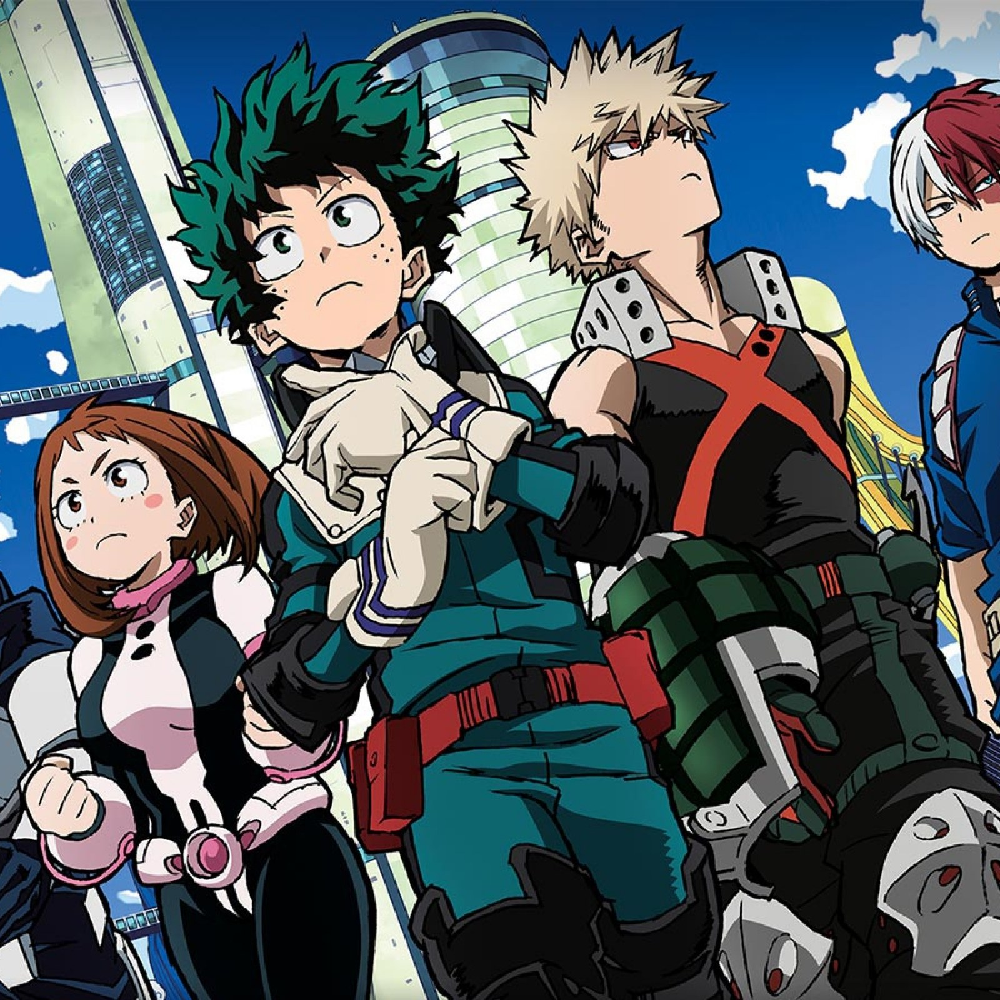

I watch more anime than I do amarican cartoons. It is my favorite genre of T.V show. Some of my favorite animes/mangas include
credit to TMS entertainment
credit to Aniplex studios
credit to Bones studio
Video games have been a part of my life ever since I was a little kid. There was nothing like coming home from a tough day at school ploping down on my couch in my room and playing on my nintendo switch. Some of my faviorite games include:
I have three pets of my own. Their is my guinea pig Anna.B (it stands for Annabeth from Percy Jackson) Then their is my cat I named her Tag when I was 3 and I just stuck with it she is a calico cat that is half the size of most cats but she can beat my dog if she wanted to .Last but defintely not least their is my dog Grim. He is a mastif but he is a big baby. First of all he is afraid of his own children. second of all he is afraid of stairs. third my cat wacked him on the nose and he whined about it. but we still love him
tivecommons.org/l/by-nc-sa/4.0/80x15.png" />